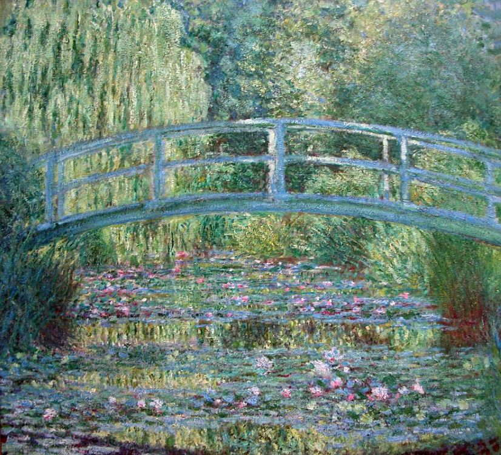

S

Le bassin aux nymphéas harmonie verte, Huile sur toile de Claude Monet, 1899.
Les Nymphéas est une série d'environ 250 peintures à l'huile impressionnistes élaborées par le peintre français Claude Monet.
Ces peintures représentent le jardin de fleurs, et plus particulièrement le bassin de nénuphars, de la maison du peintre à Giverny.
Beaucoup de tableaux ont été peints tandis que l'artiste souffrait de la cataracte, qui aurait commencé à se développer progressivement à partir de 1908.
Ces tableaux se présentent sous différentes formes (carrée, circulaire, rectangulaire, etc.) et avec des tailles très variables pouvant atteindre plusieurs mètres.

Le bassin du Renard aux nymphéas, à partir de l'oeuvre de Claude Monet par Sarah Petit Masingue, 29 mai 2026.
Au bord d’un lac couvert de nymphéas, là où l’eau brillait comme un miroir sous le soleil du matin, vivait un petit renard.
Son terrier se cachait derrière de grands roseaux, tout près d’un vieux saule qui penchait doucement ses branches vers l’eau.
Le lac ressemblait à un tableau vivant : des fleurs roses et blanches flottaient calmement à la surface, des libellules bleues dansaient dans l’air,
et les reflets du ciel se mélangeaient aux couleurs des nénuphars comme dans un rêve.
on pouvait voir un petit renard nager doucement entre les nymphéas, sous la lumière paisible du lac.
- titre: Les Nymphéas
- artiste: Claude monet
- date: 1898-1926
- mouvement artistique: Impressionnisme
- dimention: 219 × 602 cm
- techenique: huile sur toile